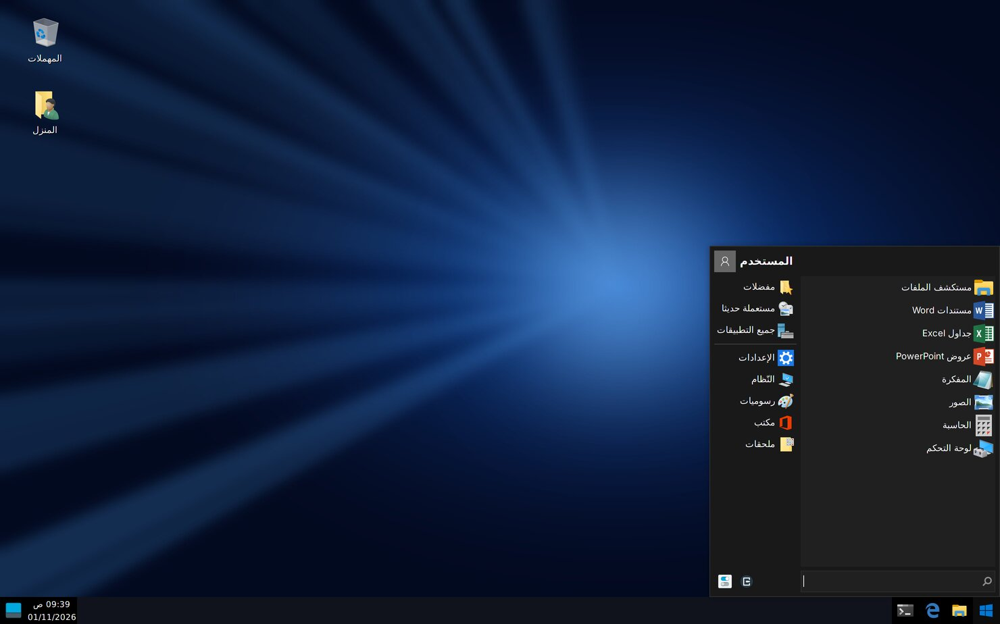
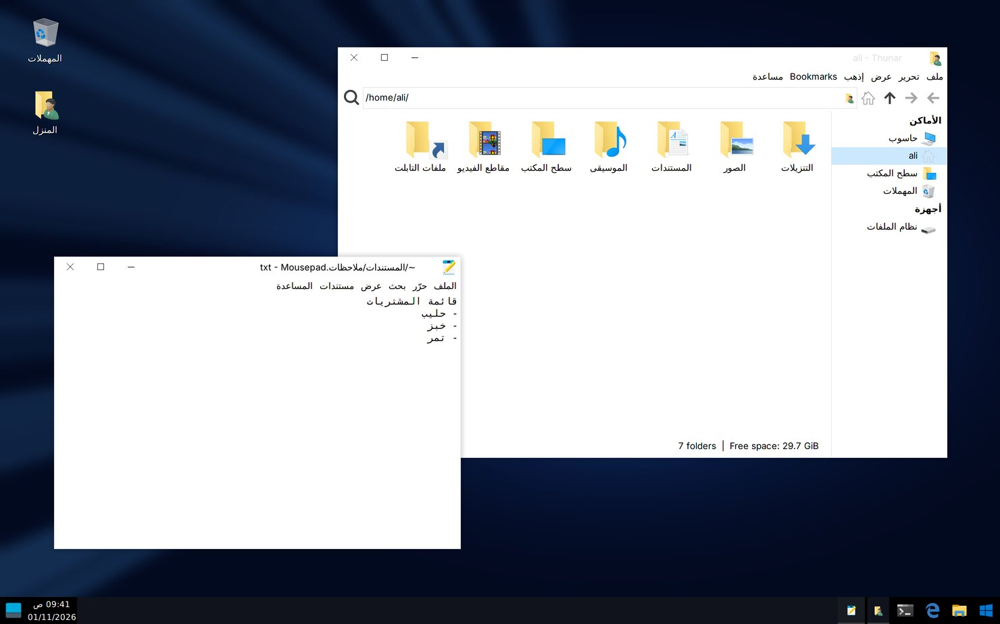

💻 التابلت كمبيوتر
خلّ جالكسي تاب S9 Ultra يشتغل كأنه كمبيوتر. فيه طريقتين، وتقدر تستخدمهم مع بعض.
🖥️الطريقة ١: سامسونج DeX موجود بجهازك
ما تحتاج تثبّت شي. يعطيك شكل الكمبيوتر: شريط مهام ونوافذ تكبّرها وتصغّرها.
- اسحب من فوق الشاشة لتحت مرتين عشان تفتح الإعدادات السريعة.
- اضغط زر DeX. إذا ما لقيته اضغط ✏️ (تعديل) وأضفه للقائمة.
- ركّب كيبورد الكفر أو أي كيبورد وماوس بلوتوث، ويصير عندك لابتوب.
- تبيه على شاشة كبيرة؟ وصّل التابلت بشاشة أو تلفزيون بكيبل USB-C إلى HDMI.
ملاحظة: البرامج في DeX تبقى تطبيقات أندرويد. إذا تبي كمبيوتر حقيقي بشكل ويندوز، شوف الطريقة ٢.
🪟الطريقة ٢: كمبيوتر بشكل ويندوز ١٠، وبالعربي
كمبيوتر حقيقي (لينكس) شكله مثل ويندوز ١٠، وقائمة ابدأ مثل ويندوز ٧، والواجهة كلها بالعربي. فيه مستكشف الملفات، ومتصفح الإنترنت، والمفكرة، والحاسبة، والصور، ومشغل الوسائط، ومستندات Word وجداول Excel وعروض PowerPoint. يشتغل بدون نت، وما يحتاج روت ولا يأثر على جهازك.


- نزّل تطبيق Termux من F-Droid. لا تنزّله من Google Play لأن نسخته مختلفة. في صفحة F-Droid انزل للإصدار المكتوب جنبه «مقترحة» (مو «تجريبي») واضغط «نزّل APK» تحته.
- نزّل تطبيق Termux:X11، وهو الشاشة اللي يطلع فيها سطح المكتب. من صفحة الإصدارات نزّل الملف
termux-x11-universal-debug.apk. لا تنزّل اللي اسمه فيهsharedUid. إذا طلع لك تنبيه Google «تم حظر تطبيق غير آمن»: هذا طبيعي مع هالتطبيقات لأنها مصنوعة لإصدار أندرويد قديم عن قصد. اضغط «التثبيت على أي حال» (مو «حسنًا»). وإذا منعك «الحظر التلقائي» من سامسونج: الإعدادات ← الأمان والخصوصية ← الحظر التلقائي ← طفّه، وبعد التثبيت ترجّعه إذا تبي. - إعداد مهم عشان ما يقفل لحاله:
- فعّل خيارات المطوّر: الإعدادات ← حول الجهاز اللوحي ← معلومات البرامج ← اضغط «رقم الإصدار» ٧ مرات.
- الإعدادات ← خيارات المطوّر ← فعّل
Disable child process restrictions(تعطيل قيود العمليات الفرعية). - الإعدادات ← التطبيقات ← Termux ← البطارية ← غير مقيّدة.
- افتح Termux والصق هالأمر واضغط Enter:
ياخذ من ٢٠ إلى ٤٠ دقيقة حسب سرعة النت، ويحتاج تقريباً ٤ جيجا مساحة. إذا طلب منك صلاحية الملفات، وافق.
- شغّل الكمبيوتر: اكتب
desktopفي Termux، وبيفتح Termux:X11 وفيه سطح المكتب.
لإيقافه ارجع لـ Termux واكتبdesktop-stop. - زر على الشاشة الرئيسية (اختياري): نزّل تطبيق Termux:Widget من F-Droid، وأضف الويدجت حقه للشاشة الرئيسية، واختر
Computer. بعدها تضغط عليه مرة وحدة ويشتغل الكمبيوتر.
💡نصايح
- الكتابة بالعربي من الكيبورد:
Alt + Shiftيبدّل بين العربي والإنجليزي. - تبي الواجهة بالإنجليزي؟ شغّله كذا:
DESKTOP_LANG=en desktop. - الخط صغير أو كبير؟ شغّله كذا:
DESKTOP_SCALE=1 desktopلحجم أصغر، أوDESKTOP_SCALE=3 desktopلحجم أكبر. الحجم الافتراضي 2. - اللمس: من إعدادات Termux:X11 (من الإشعار حقه اضغط Preferences) غيّر
Touchscreen input modeمن Trackpad إلى اللمس المباشر، عشان تضغط على الشاشة نفسها بدل ما تحرّك مؤشر. - ملفات التابلت (صورك وتنزيلاتك) تلقاها في مستكشف الملفات داخل مجلد «ملفات التابلت».
- تبي برامج زيادة؟ افتح «موجه الأوامر» داخل الكمبيوتر واكتب مثلاً
sudo apt install gimp(برنامج تعديل صور مثل فوتوشوب). - مع DeX: تقدر تفتح Termux:X11 كنافذة داخل DeX، أو تعرضه على شاشة خارجية.
⚙️برامج ويندوز (.exe) تجريبي
برامج ويندوز مصنوعة لمعالجات الكمبيوتر (Intel وAMD)، ومعالج التابلت نوعه مختلف (ARM)، فما تشتغل مباشرة. السكربت يركّب أداتين تترجم لها: Wine يخلي البرنامج يحسب نفسه على ويندوز، وBox64 يترجم أوامر معالج الكمبيوتر لمعالج التابلت. بعدها تفتح ملف .exe بضغطتين من مستكشف الملفات.
البرامج الخفيفة والقديمة غالباً تشتغل، والثقيلة أبطأ، وبعضها ما يشتغل أبداً. للألعاب، تطبيق Winlator على أندرويد أحسن.